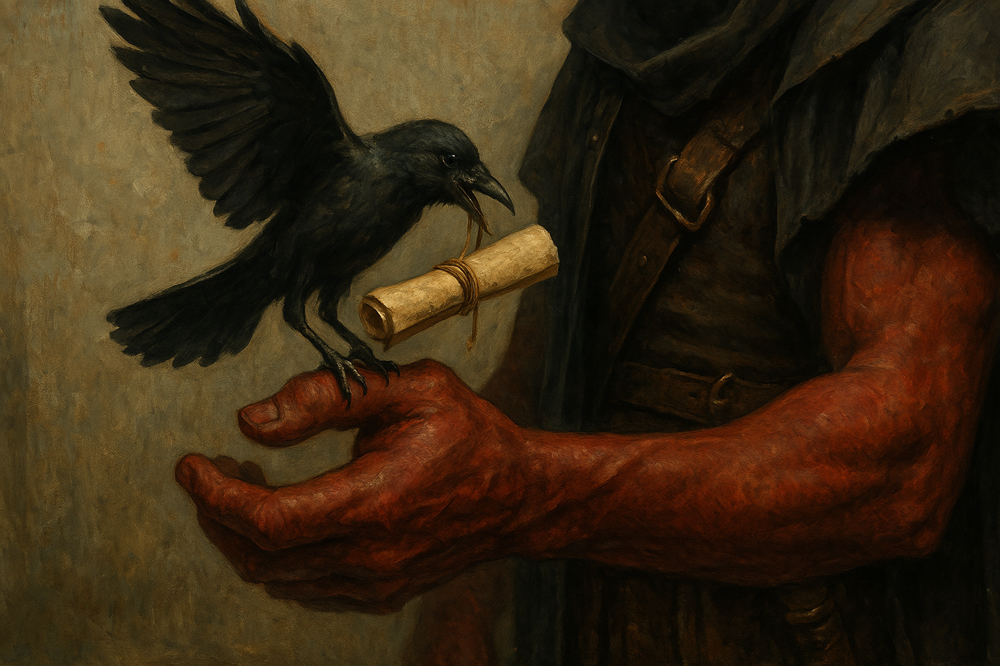
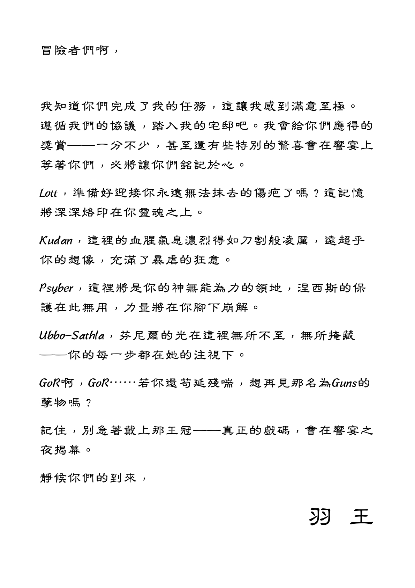

Chapter 3: Lord of the Feathers
The Cave of Drogsland

The Cave of Drogsland
15051.05.10
冒險者們雖然暫時脫困，卻仍然找不到逃離洞穴的方法。卓茲克爵士眼看只有 Kudan 能和他對話，感到有些無趣。在他一陣操弄下，其他冒險者都能看見與聽見他了，除了 Psyber 外，他一愣一愣的看著，不清楚到底大家到底在進行什麼對話。
卓茲克爵士提起了 Usioni，表示這位在 Kudan 心中似乎挺重要的 Usioni，其實也是卓茲克家族的一員，並詢問 Kudan 是否想知道關於 Usioni 更多事？在對於 Usioni 是誰這件事上，Lott 感到十分好奇，但卻遭到 Kudan 表現出不滿的眼神，兩人發生了些爭執，連 Ubbo 看到也覺得十分有趣，加入了這場小混戰。
接著 Kudan 便自己跑到旁邊休息，暫時不管卓茲克爵士與其他人了。不過卓茲克爵士依舊留給他一個可能有用的關鍵字「角塔 Horn Tower」。他說他看見 Usioni 悠閒地坐在角塔，但他也不知道角塔在什麼地方，只知道那是他的所在地。
冒險者們也試圖研究他們拿到的皇冠，Lott 和 Kudan 差一點抵擋不了皇冠的誘惑，想戴在頭上，但都被及時阻止。然而 Ubbo 觸碰皇冠時，卻什麼反應都沒有。GoR 則和 Psyber 提議，離開洞穴後，他們可以來偽造這個皇冠，把實體留下來，贗品拿給委託人，藉此大賺一筆。
休息過後，冒險者們繼續尋找出口。原本通往從宅邸下降到洞穴那塊區域的路被巨石給封住，暫時沒辦法直接過去。Ubbo 爬上了洞穴頂部，發現了一個小縫隙，但這個縫隙似乎只有他能通過。於是 Kudan 透過了魔法，叫喚出了幾個隕石，將地洞的天花板打破，由 Ubbo 爬上去後拉著繩子，讓大家可以攀繩而上。
大家陸續爬上去後，終於回到了宅邸的一樓，但卻發現通往宅邸外的門竟然打不開。冒險者們試圖攻擊們，卻只悠悠聽見卓茲克爵士的碎念，說著怎麼能就這樣讓大家闖進又闖出他的宅邸？此時，連 Psyber 也能看見與聽見他了。
冒險者們對著卓茲克爵士發起攻擊，卻發現爵士似乎對於他們的攻擊沒有受到多大的影響。反之，爵士的回擊卻非常重，甚至讓他們感到十分恐懼。在大家艱困的戰鬥後，最終，爵士化為狀似玻璃的碎片，落在了卓茲克宅邸的地板上。Kudan 拾起碎片，看見 Usioni 在這裡活動的片段，接著，玻璃碎片便消失了。
宅邸往外的門輕鬆推開，午後的陽光依然刺眼。
冒險者們走在卓茲蘭的路上，但只有 Ubbo 注意到一隻烏鴉正朝著他們飛來。烏鴉停在 Lott 手上，他的腳上綁著一封信。Lott 小心翼翼的解開綁在烏鴉腳上的細繩，卻意外傷到烏鴉的腳，腳掌應聲掉落，烏鴉則化為碎片，消失了。
Lott 打開捲起的信，唸了出來：

Lott 憶起過去接這名委託人的案件時，都是由他的代理人，一位名叫 Whisper，穿著斗篷，難以分別其性別、年齡或任何特徵的下屬來交代事項、索取物品，和領取報酬，因此他對於「羽王」這個名字完全不了解。但對於信中提及「永遠無法抹去的傷疤」，令他感到不寒而慄。
讀完這封信，Lott 的腦中瞬間浮現了一座陰暗的宅邸。
他知道怎麼到那個地方去。